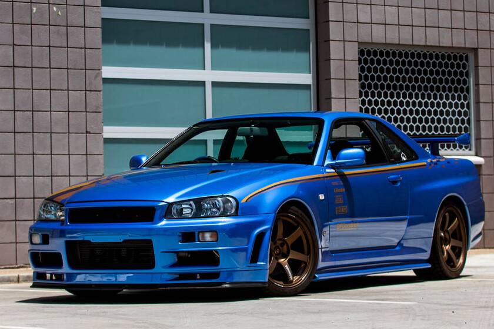

skyline r34
skyline r34
Dimensiones: 181.1 in L x 70.3 in A x 53.5 in A
Potencia: 320 CV
Motor: RB26DETT de seis cilindros en línea
Peso vehicular: 1.540 kg
Transmisión: manual de 6 velocidades
skyline r34
Dimensiones: 181.1 in L x 70.3 in A x 53.5 in A
Potencia: 320 CV
Motor: RB26DETT de seis cilindros en línea
Peso vehicular: 1.540 kg
Transmisión: manual de 6 velocidades
GT-R
Dimensiones: 174-177 in L x 69 in A x 51-52 in A
Potencia: 130 CV
Motor: 2.2 L 4 motor en línea
Peso vehicular: 2,580 a 2,755 lb
Transmisión: manual de 5 velocidades
240z
Dimensiones: 188 in L x 75 in A x 53 in A
Potencia: 330 CV
Motor: 2JZ-GTE de seis cilindros en línea y 3.0 litros biturbo
Peso vehicular: 1.585 kg
Transmisión: manual de 5 velocidades